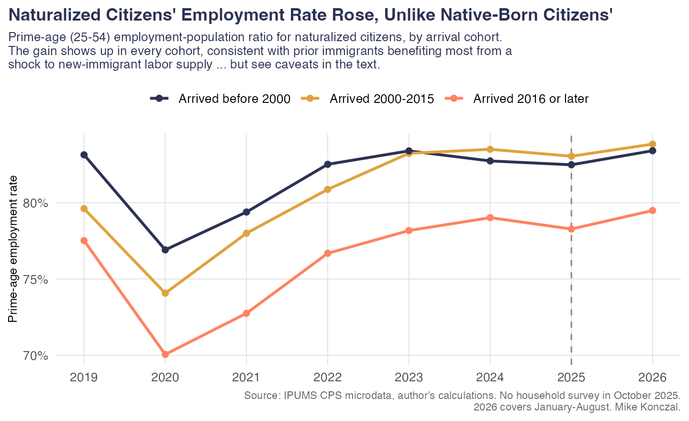
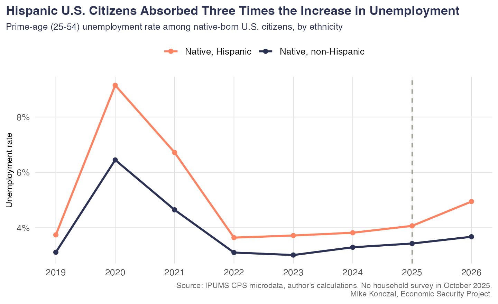
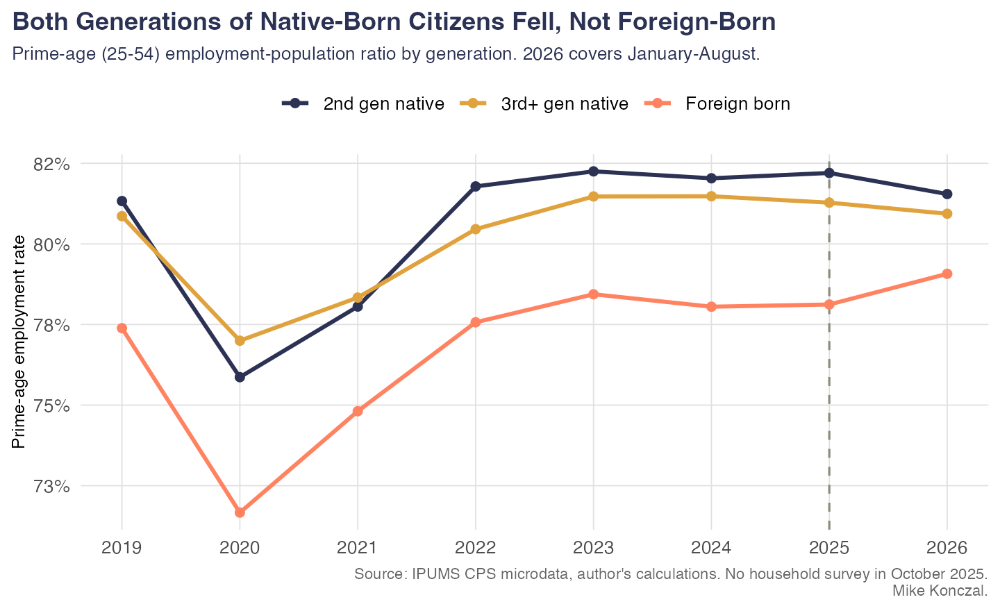
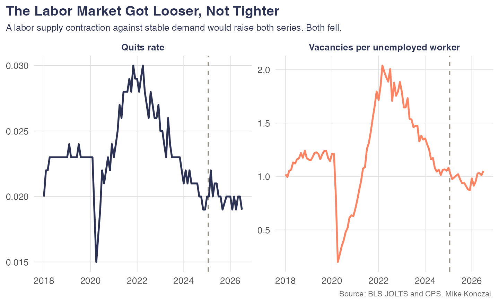
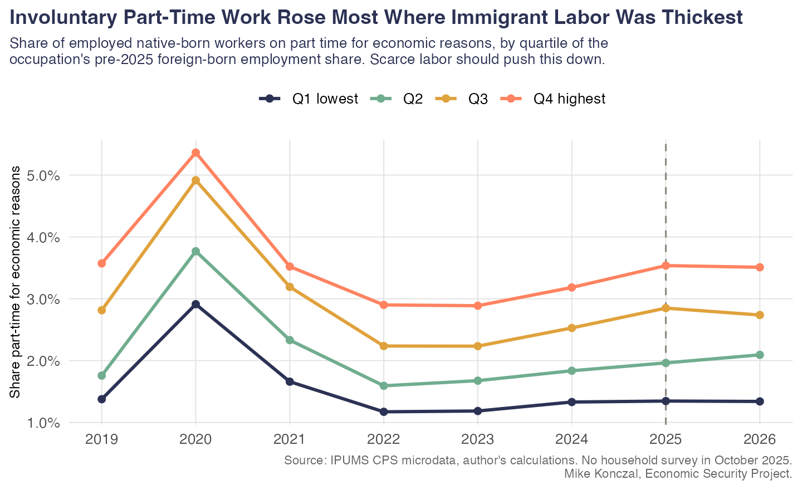
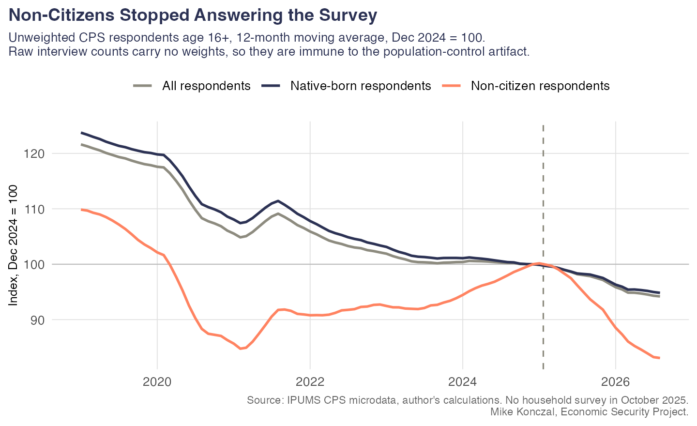
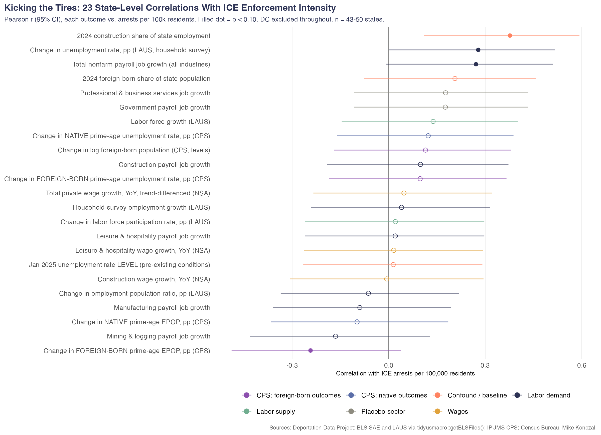
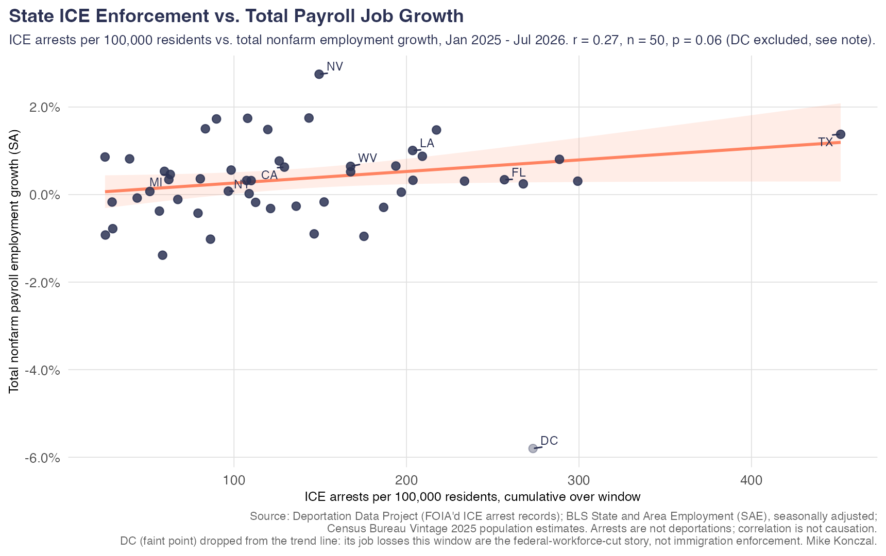

Working notes · not for publication
Potentials: Candidate Graphics for the Deportations Post
Thirteen figures from the existing analysis that aren't in blog_post.md yet, grouped by what they'd add.
Why these
The current post runs eight hypotheses and gets a clean sweep of nulls. That's convincing on its own terms, but it doesn't yet engage the strongest counter-arguments in circulation — the CIS within-year-weights claim, the Bessent bottom-quartile wage claim, or the construction/occupation-by-occupation version of the theory — and it's missing the one finding that complicates the story rather than confirming it (naturalized citizens). The list below is organized in that order: answer the hardest objections first, then reinforce hypotheses already in the post, then optional supporting evidence.
Tier 1 · Answers the strongest counter-arguments
These aren't in the post at all right now. Each one responds to a specific claim made publicly in 2026, not a hypothetical objection.
Hypothesis 9: Properly measured — using within-year weights that dodge the population-control problem — natives gained about two million jobs a year in 2025 and 2026.
REFUTEDgraphics/b2_fig2_within_year.png

Data: IPUMS CPS microdata. For each year 2015–2026 (2020 omitted, 2026 covers January–August), the weighted employed native-born population in January is compared to December using only that year's own survey weights — the method that avoids the January population-control revision, since weights don't change within a year. Paired bars per year show two series: the within-year change in native employment (navy) and the within-year change in the native population the survey infers (red). If the "employment" bar moves only because the "population" bar moves with it, the gain is arithmetic, not hiring.
Use for: the closing/synthesis section. This is the single most sophisticated pro-deportation argument in circulation and deserves to be the post's strongest rebuttal, not an afterthought.
Hypothesis 10: Construction — about a quarter foreign-born, over 90% male, mostly non-college, and impossible to offshore — is the cleanest test case. Native construction workers should be the clearest winners.
REFUTEDgraphics/b2_fig12_construction.png

Data: IPUMS CPS microdata, restricted to the construction industry, annual averages of monthly rates, 2015–2026. Two panels on a shared year axis: native-born unemployment rate, and the industry's foreign-born share of employment. Construction was picked because it's the single best-identified sector for the substitution story — roughly a quarter foreign-born, over 90% male, mostly non-college, and its output can't be offshored.
Use for: this is the sector-specific version of Hypothesis 4 (least-educated workers) and directly answers "but what about construction specifically," which is the first thing an informed skeptic will ask.
Hypothesis 11: Go occupation by occupation — roofers, drywall, meatpacking, landscaping, housekeeping. That's where natives should have gotten their jobs back.
REFUTEDgraphics/b2_fig11_occupations.png

Data: IPUMS CPS microdata. A scatter of the twenty CPS occupations with the highest 2022–24 foreign-born employment share, each occupation one point sized by its native-born sample count. The x-axis is the occupation's foreign-born share; the y-axis is the change in that occupation's native-born unemployment rate from a 2023m9–2024m8 baseline to 2025m9–2026m8. A dashed line shows the linear fit across all twenty — flat to positive, meaning no tendency for native unemployment to fall in the most immigrant-heavy occupations.
Use for: this is a table a skeptical reader can check line by line — that's the point of including it. Good candidate for a "here's the full list" moment mid-post.
Hypothesis 12: If deportations remove new immigrants, the workers who benefit most should be prior immigrants — naturalized citizens are the closest substitutes for new arrivals, so they should gain the most of anyone.
COMPLICATION — PARTIALLY SUPPORTEDgraphics/fig16_naturalized_arrival_epop.png · graphics/b2_fig8_citizenship.png


Data: both from IPUMS CPS microdata. The left chart tracks the prime-age (25–54) employment-population ratio for naturalized citizens only, split into three arrival cohorts — arrived before 2000, 2000–2015, 2016 or later — 2019–2026. The right chart puts all three citizenship groups on one axis — native-born, naturalized citizen, noncitizen — plotting prime-age EPOP 2018–2026, so you can see which group's line moves and judge whether a rising noncitizen line looks like real economic gain or like the group shrinking fastest in the survey (selective departure and non-response push measured noncitizen levels down mechanically, which can lift a weighted rate even with no behavioral change).
Use for: this needs its own paragraph, not a caption. Naming the strongest evidence against your own conclusion and then showing why it doesn't rescue the theory is what makes the other eight hypotheses credible. Leaving it out is the single biggest risk to this post surviving scrutiny.
Tier 2 · Strengthens hypotheses already in the post
These sharpen or visually support claims the post already makes.
Hypothesis 13: Wage growth for the bottom quartile of workers accelerated to almost 3.5× the rate of the top quartile (the Bessent claim), measured on a composition-immune, matched-worker basis.
REFUTEDgraphics/b2_fig6_tracker_quartile.png
Data: a matched-worker wage tracker built from CPS outgoing rotation group microdata, not a published BLS series. Each native-born worker's hourly wage is linked to their own wage twelve months earlier via their CPS panel ID; the log change is computed and the median taken within quartiles of workers' own average wage. This is the same construction the Atlanta Fed uses for its published Wage Growth Tracker, rebuilt here from microdata so it can be cut by nativity, which the published series can't do. Four lines, one per quartile, 2019–2026.
Use for: swap in for, or run alongside, the current Hypothesis 5 chart (fig14_wage_p10.png), which uses a cross-sectional 10th percentile that's vulnerable to the "composition changed, not wages" objection. This version pre-empts that.
Hypothesis 14 (context, not itself a test): Since December 2024, virtually every net payroll job has gone to women — the fact that started this whole post.
MOTIVATING FACTgraphics/b2_fig3_men_women_payrolls.png

Data: BLS Current Employment Statistics (the establishment payroll survey, not CPS), nonfarm payroll counts by sex, monthly 2022–2026, rebased so December 2024 = 0 and plotted as cumulative change since then. This isn't a nativity chart at all — it's the aggregate fact that prompted the post's original question about women's share of job gains, shown directly rather than described in prose.
Cumulative payroll change by sex since December 2024. Right now Hypothesis 3 just asserts this in prose ("the 101% female job gain response I got"). This is the chart that makes it visible before you pivot to whether immigration explains it.
Use for: pair with the intro paragraph or directly above Hypothesis 3, so the reader sees the fact being explained before the explanations get tested.
Hypothesis 15: The removed workforce was roughly two-thirds male, so native men — the closest substitutes — should be moving into the occupations immigrants vacated.
REFUTEDgraphics/b2_fig4_overlap.png

Data: an exposure-weighted overlap index built from IPUMS CPS microdata. For each group — native men, native women, naturalized citizens, noncitizens — and each year 2015–2026, the group's employment is distributed across CPS occupation codes, then weighted by each occupation's 2022–24 foreign-born employment share. A rising line means the group is concentrating more of its employment in occupations immigrants worked; a flat or falling line means it isn't. Four lines shown together for comparison.
Use for: this is the rigorous version of Hypothesis 3 (native men's EPOP fell) — it directly answers "maybe EPOP fell for other reasons, but men still moved into the vacated work," which a sharp reader could otherwise raise.
Hypothesis 16: If this is a pure labor-supply story, only non-citizens should be affected. Native-born U.S. citizens — including Hispanic citizens and the U.S.-born children of immigrants — should be untouched or better off.
REFUTEDgraphics/fig8_hispanic_citizens.png · graphics/fig15_generation_epop.png


Data: both from IPUMS CPS microdata, native-born U.S. citizens only in the left
chart. The left chart splits by Hispanic ethnicity and plots the prime-age (25–54) unemployment rate,
2019–2026. The right chart splits by generation using the CPS NATIVITY variable — second-generation
means native-born with at least one foreign-born parent, third-plus generation means both parents native-born
— plus a foreign-born line for comparison, plotting prime-age EPOP, 2019–2026. Neither group in either chart
includes anyone who could be directly removed by enforcement; both are U.S. citizens by birth.
Use for: this is the affirmative alternative explanation the post currently doesn't offer — not just "no benefit," but a specific, testable mechanism (enforcement spillover) for why things got worse. Strong candidate for its own hypothesis, possibly the most newsworthy single finding available.
Hypothesis 17: Deportations removed millions of renters from high-immigrant metros, cutting rents and delivering natives a real wage gain even if nominal wages were flat.
REFUTEDgraphics/b2_fig9_rents.png

Data: BLS CPI, not CPS. The 12-month percent change in two shelter components — rent of primary residence and owners' equivalent rent — seasonally adjusted, 2018–2026. Two vertical markers: a dotted line at the March 2023 peak in rent inflation, and a dashed line at January 2025 when enforcement stepped up, so the reader can see which one the deceleration actually lines up with.
Use for: the causal-caution paragraph the post is missing. This is good evidence for "other things were also happening in this window" without undercutting the post's main results.
Hypothesis 18: A genuine negative labor-supply shock against stable demand should tighten the labor market — job openings and quits should rise.
REFUTEDgraphics/fig4_tightness.png

Data: BLS JOLTS and CPS, not nativity-specific. Two panels, 2018–2026: vacancies per unemployed worker (job openings divided by the number unemployed) and the quits rate. Both are standard aggregate measures of labor-market tightness that should rise together if a labor-supply contraction hit a stable-demand economy — this is the aggregate discriminator between a supply story and a demand story.
Use for: another strong candidate for the closing synthesis paragraph — it's the aggregate, JOLTS-based version of "this looks like weak demand, not tight supply."
Tier 3 · Optional / supporting evidence
Weaker on their own, or already covered by other charts — use only if there's room, or move to an appendix/GitHub link.
Hypothesis 19: Scarce labor should mean employers give existing native workers more hours before raising wages — involuntary part-time work should fall.
REFUTEDgraphics/fig10_parttime.png

Data: IPUMS CPS microdata. The share of employed native-born workers who report being part-time for economic reasons (they want full-time work but can't get it), grouped into quartiles by their occupation's pre-2025 foreign-born employment share, 2019–2026. Four lines, one per exposure quartile.
Use for: not currently tested anywhere in the post (the hours/underemployment margin is untouched). Worth adding if you want a ninth clean hypothesis rather than relying on Tier 1/2 material alone.
Measurement note (not a hypothesis): how much of the "foreign-born decline" in the CPS is real departure vs. survey non-response?
METHODS CAVEATgraphics/fig5_nonresponse.png

Data: IPUMS CPS microdata, but deliberately unweighted — raw interview counts, not survey-weighted population totals. Non-citizen, native-born, and all respondents age 16+, 12-month moving average, indexed to December 2024 = 100, 2019–2026. Because these are counts of people who actually answered rather than weighted estimates of the population, they can't be distorted by the January population-control revision the way weighted levels can — they measure survey participation directly.
Unweighted CPS respondent counts (no weights, immune to the population-control artifact) show non-citizen participation falling sharply. This is the fact underlying the "read rates, not levels" methods note already in your findings memos.
Use for: a footnote or methods aside if a reader might otherwise ask why the post never cites raw employment levels by nativity.
Hypothesis 20: States and metros with the heaviest ICE enforcement should show the clearest native labor-market gains.
WEAK / INCONCLUSIVEgraphics/fig_state_hypothesis_scan.png · graphics/fig_state_enforcement_vs_jobs.png


Data: state-level ICE administrative arrest counts (individual-level FOIA microdata from the Deportation Data Project at UC Berkeley Law/UCLA, arrests — not removals — per 100,000 residents, January 2025–July 2026) correlated against state outcomes, DC excluded throughout. The left chart is a scan of 23 outcome variables at once (Pearson r with 95% CIs, filled dot = p<0.10), drawn from both CPS native/foreign-born rates and BLS state payroll data. The right chart is the single scatter of enforcement intensity against total nonfarm payroll growth, using BLS State and Area Employment (SAE) data — a near-census establishment count, unlike the thin CPS state cells used elsewhere.
No clean relationship either way between state enforcement intensity and payroll job growth or
other outcomes. Your own PLAN.md flags this as "the most intuitive chart for a general reader and
the weakest statistically" — CPS state cells are thin, so treat this as suggestive at best.
Use for: probably cut from the main post. If included at all, keep it to one chart with the sample-size caveat stated explicitly, or link it from the GitHub repo instead.